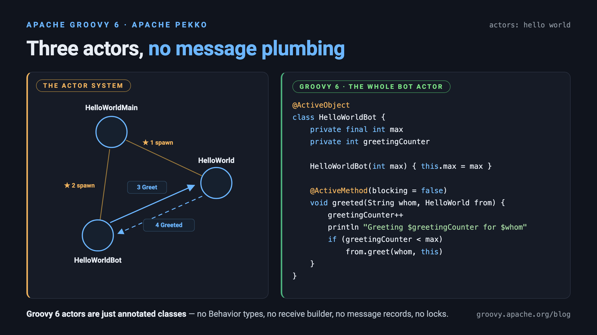

Using Apache Pekko actors and Groovy™ 6 actors
Published: 2023-07-17 11:24PM (Last updated: 2026-08-22 12:00AM)
 Apache Pekko is an Apache-licensed fork of the Akka project (based on Akka version 2.6.x) and provides a
framework for building applications that are concurrent, distributed, resilient and elastic.
Pekko provides high-level abstractions for concurrency based on actors,
as well as additional libraries for persistence, streams, HTTP, and more.
It provides Scala and Java APIs/DSLs for writing your applications. We’ll be using the latter.
We’ll look at just one example of using Pekko actors.
Apache Pekko is an Apache-licensed fork of the Akka project (based on Akka version 2.6.x) and provides a
framework for building applications that are concurrent, distributed, resilient and elastic.
Pekko provides high-level abstractions for concurrency based on actors,
as well as additional libraries for persistence, streams, HTTP, and more.
It provides Scala and Java APIs/DSLs for writing your applications. We’ll be using the latter.
We’ll look at just one example of using Pekko actors.
By way of comparison, we’ll also look at the actor support built into
Groovy 6 in the groovy.concurrent package (GEP-18). Alongside actors,
that package provides agents, dataflow variables, Go-style channels, and
parallel collections — all virtual-thread-first and composable with Groovy’s
async/await support.
Here, we’ll just look at the comparable actor features for our Pekko example.
|
Note
|
Before Groovy 6, these actor features weren’t built in and the GPars library was the popular choice. If you are on an earlier Groovy version or maintaining an existing GPars codebase, the GPars meets virtual threads post shows the equivalent GPars examples. The companion repository includes a legacy GPars version of this example too. |

The example
A common first example involving actors involves creating two actors where one actor sends a message to the second actor which sends a reply back to the first. We could certainly do that, but we’ll use a slightly more interesting example involving three actors. The example comes from the Pekko documentation and is illustrated in the following diagram (from the Pekko documentation):

The system consists of the following actors:
-
The
HelloWorldMainactor creates the other two actors and sends an initial message to kick off our little system. The initial message goes to theHelloWorldactor and gives theHelloWorldBotas the reply address. -
The
HelloWorldactor is listening forGreetmessages. When it receives one, it sends aGreetedacknowledgement back to a reply address. -
The
HelloWorldBotis like an echo chamber. It returns any message it receives. This would potentially be an infinite loop, however, the actor has a parameter to tell it the maximum number of times to echo the message before stopping.
A Pekko implementation in Groovy
This example uses Groovy 6.0.0-beta-2 and Pekko 1.7.0. It was tested with JDK 21 and 25.
The Pekko documentation gives Java and Scala implementations. You should notice that the Groovy implementation is similar to the Java one but just a little shorter. The Groovy code is a little more complex than the equivalent Scala code. We could certainly use Groovy meta-programming to simplify the Groovy code in numerous ways but that is a topic for another day.
Here is the code for HelloWorld:
class HelloWorld extends AbstractBehavior<Greet> {
static record Greet(String whom, ActorRef<Greeted> replyTo) {}
static record Greeted(String whom, ActorRef<Greet> from) {}
static Behavior<Greet> create() {
Behaviors.setup(HelloWorld::new)
}
private HelloWorld(ActorContext<Greet> context) {
super(context)
}
@Override
Receive<Greet> createReceive() {
newReceiveBuilder().onMessage(Greet.class, this::onGreet).build()
}
private Behavior<Greet> onGreet(Greet command) {
context.log.info "Hello $command.whom!"
command.replyTo.tell(new Greeted(command.whom, context.self))
this
}
}First we define Greet and Greeter records to have strong typing for the messages in our system.
We then define the details of our actor. A fair bit of this is boilerplate. The interesting part
is inside the onGreet method. We log the message details before sending back the Greeted acknowledgement.
The HelloWorldBot is similar. You should notice some state variables which keep an
invocation counter and a maximum number of invocations before terminating:
class HelloWorldBot extends AbstractBehavior<HelloWorld.Greeted> {
static Behavior<HelloWorld.Greeted> create(int max) {
Behaviors.setup(context -> new HelloWorldBot(context, max))
}
private final int max
private int greetingCounter
private HelloWorldBot(ActorContext<HelloWorld.Greeted> context, int max) {
super(context)
this.max = max
}
@Override
Receive<HelloWorld.Greeted> createReceive() {
newReceiveBuilder().onMessage(HelloWorld.Greeted.class, this::onGreeted).build()
}
private Behavior<HelloWorld.Greeted> onGreeted(HelloWorld.Greeted message) {
greetingCounter++
context.log.info "Greeting $greetingCounter for $message.whom"
if (greetingCounter == max) {
return Behaviors.stopped()
} else {
message.from.tell(new HelloWorld.Greet(message.whom, context.self))
return this
}
}
}The interesting logic is in the onGreeted method. We increment the counter and either stop,
if we have reached the maximum count threshold, or echo back the message contents to the sender.
Let’s have a look at the final actor:
class HelloWorldMain extends AbstractBehavior<HelloWorldMain.SayHello> {
static record SayHello(String name) { }
static Behavior<SayHello> create() {
Behaviors.setup(HelloWorldMain::new)
}
private final ActorRef<HelloWorld.Greet> greeter
private HelloWorldMain(ActorContext<SayHello> context) {
super(context)
greeter = context.spawn(HelloWorld.create(), 'greeter')
}
@Override
Receive<SayHello> createReceive() {
newReceiveBuilder().onMessage(SayHello.class, this::onStart).build()
}
private Behavior<SayHello> onStart(SayHello command) {
var replyTo = context.spawn(HelloWorldBot.create(3), command.name)
greeter.tell(new HelloWorld.Greet(command.name, replyTo))
this
}
}There is a SayHello record, to act as a strongly typed incoming message.
The HelloWorldMain actor creates the other actors.
It creates one HelloWorld actor which is the greeter target of subsequent messages.
For each incoming SayHello message, it creates a bot, then sends a message
to the greeter containing the SayHello payload and telling it to reply to the bot.
Finally, we need to kick off our system. We create the HelloWorldMain actor and
send it two messages:
var system = ActorSystem.create(HelloWorldMain.create(), 'hello')
system.tell(new HelloWorldMain.SayHello('World'))
system.tell(new HelloWorldMain.SayHello('Pekko'))The log output from running the script will look similar to this:
[hello-pekko.actor.default-dispatcher-6] INFO pekko.HelloWorld - Hello World! [hello-pekko.actor.default-dispatcher-6] INFO pekko.HelloWorld - Hello Pekko! [hello-pekko.actor.default-dispatcher-3] INFO pekko.HelloWorldBot - Greeting 1 for Pekko [hello-pekko.actor.default-dispatcher-5] INFO pekko.HelloWorldBot - Greeting 1 for World [hello-pekko.actor.default-dispatcher-6] INFO pekko.HelloWorld - Hello Pekko! [hello-pekko.actor.default-dispatcher-6] INFO pekko.HelloWorld - Hello World! [hello-pekko.actor.default-dispatcher-5] INFO pekko.HelloWorldBot - Greeting 2 for Pekko [hello-pekko.actor.default-dispatcher-3] INFO pekko.HelloWorldBot - Greeting 2 for World [hello-pekko.actor.default-dispatcher-5] INFO pekko.HelloWorld - Hello Pekko! [hello-pekko.actor.default-dispatcher-5] INFO pekko.HelloWorld - Hello World! [hello-pekko.actor.default-dispatcher-3] INFO pekko.HelloWorldBot - Greeting 3 for Pekko [hello-pekko.actor.default-dispatcher-5] INFO pekko.HelloWorldBot - Greeting 3 for World [hello-pekko.actor.default-dispatcher-6] INFO org.apache.pekko.actor.CoordinatedShutdown - Running CoordinatedShutdown with reason [ActorSystemTerminateReason]
A Groovy 6 implementation using groovy.concurrent
Groovy 6 ships a native concurrency toolkit in the groovy.concurrent
package (GEP-18). Among other features, it provides lightweight,
virtual-thread-friendly actors that compose with Groovy’s
async/await support.
We’ll follow the same conventions for strongly typed messages.
Because our actors reference one another, we parameterize each Actor with the
message type it accepts. Here are our three message records:
import groovy.concurrent.Actor
record Greet(String whom, Actor<Greeted> replyTo) { }
record Greeted(String whom, Actor<Greet> from) { }
record SayHello(String name) { }Now we’ll define our greeter actor. A reactor actor is stateless: its
closure handles each incoming message. Here we don’t need to reply directly,
so we send a Greeted message on to the reply address ourselves:
Actor<Greet> greeter
greeter = Actor.reactor { Greet command ->
println "Hello $command.whom!"
command.replyTo.send(new Greeted(command.whom, greeter))
}Our bot needs to remember how many greetings it has seen, so we use a
stateful actor. We seed it with an initial state of 0; the handler
receives the current state and the message, and returns the next state:
def newBot = { int max ->
Actor<Greeted> bot
bot = Actor.stateful(0) { int count, Greeted message ->
int next = count + 1
println "Greeting $next for $message.whom"
if (next < max) message.from.send(new Greet(message.whom, bot))
else bot.stop()
next
}
bot
}Our main actor is very simple. It waits for SayHello messages, and when it receives one,
it sends the payload to the greeter, telling it to reply to a newly created bot.
def main = Actor.reactor { SayHello command ->
greeter.send(new Greet(command.name, newBot(3)))
}Finally, we start the system going by sending some initial messages, give the actors a moment to finish, then stop them:
main.send(new SayHello('World'))
main.send(new SayHello('Groovy 6'))
sleep 2000
main.stop()
greeter.stop()The output looks like this (the exact interleaving varies between runs):
Hello World! Hello Groovy 6! Greeting 1 for Groovy 6 Greeting 1 for World Hello Groovy 6! Hello World! Greeting 2 for Groovy 6 Hello Groovy 6! Greeting 2 for World Greeting 3 for Groovy 6 Hello World! Greeting 3 for World
An @ActiveObject implementation
The Pekko version is class-based: each actor is a class, its state lives in
fields, and incoming messages arrive in a receive method. If you like that
shape but not the ceremony, Groovy 6 offers another option. Annotate an
ordinary class with @ActiveObject and its methods with @ActiveMethod,
and the compiler routes those calls through an internal actor. Callers just
see normal method calls, but all @ActiveMethod calls on an instance are
processed one at a time, so the object’s state needs no locks and no
concurrent collections.
Because our objects call back into one another, we mark the methods
blocking = false, so a call returns immediately instead of waiting for the
method to run. There are also no message classes to write: the method
parameters are the message.
Our greeter becomes a class with a single method:
import groovy.transform.ActiveMethod
import groovy.transform.ActiveObject
@ActiveObject
class HelloWorld {
@ActiveMethod(blocking = false)
void greet(String whom, HelloWorldBot replyTo) {
println "Hello $whom!"
replyTo.greeted(whom, this)
}
}The bot keeps its counter in a plain private field. Since every call is serialized through its own actor, incrementing it is safe:
@ActiveObject
class HelloWorldBot {
private final int max
private int greetingCounter
HelloWorldBot(int max) { this.max = max }
@ActiveMethod(blocking = false)
void greeted(String whom, HelloWorld from) {
greetingCounter++
println "Greeting $greetingCounter for $whom"
if (greetingCounter < max) from.greet(whom, this)
}
}And the main class creates the greeter and a bot per request, just like before:
@ActiveObject
class HelloWorldMain {
private final HelloWorld greeter = new HelloWorld()
@ActiveMethod(blocking = false)
void sayHello(String name) {
greeter.greet(name, new HelloWorldBot(3))
}
}Kicking off the system now looks like ordinary object-oriented code:
var main = new HelloWorldMain()
main.sayHello('World')
main.sayHello('Groovy 6')
sleep 2000The output is the same as before, and there is nothing to shut down — when the script ends, so does the JVM. Compare the HelloWorldBot here with
the Pekko one earlier: same two fields and the same logic, but no Behavior
types, no createReceive builder, and no message records.
For request/reply, leave blocking at its default of true and the call
returns the method’s result once the actor has processed it. If you want the
reply but not the wait, blocking = false on a method with a return value
hands back an Awaitable you can await later.
Discussion
The groovy.concurrent implementation is less verbose than the Pekko
implementation. Pekko is known for providing additional type safety for
actor messages, and that is partly what we saw in the Pekko version, where
each actor is a Behavior<T> for a specific message type. Pekko also brings a
much larger feature set — clustering, persistence, streams, and distribution —
so it remains the right choice when you need those capabilities.
The core Groovy actors are typed too: an Actor<Greet> only accepts Greet
messages, so message sends are checked when you compile statically (for example
with @CompileStatic or @TypeChecked) while remaining convenient for dynamic
Groovy. You choose between a stateless Actor.reactor and a stateful
Actor.stateful depending on whether the actor needs to remember anything
between messages.
Because core actors integrate with async/await, request/reply is
straightforward. Rather than wiring up an explicit reply address, a reactor can
simply return a value and the caller can await the reply from sendAndGet:
def doubler = Actor.reactor { it * 2 }
assert await(doubler.sendAndGet(21)) == 42
doubler.stop()The same building blocks — agents, dataflow variables, channels, and parallel
collections — all live in groovy.concurrent and compose with the same
async/await combinators, so you build up solutions from a single, consistent
toolkit rather than learning separate APIs. See the
Async/await for Groovy post
for the bigger picture.
Conclusion
We have had a quick glimpse at using actors with Apache Pekko and with Groovy 6’s
built-in groovy.concurrent package — both with explicit actors and with
@ActiveObject classes (with GPars noted as the pre-Groovy-6 option).
The sample code can be found here:
It contains pekko, groovy6, activeobject, and legacy gpars versions of the example.